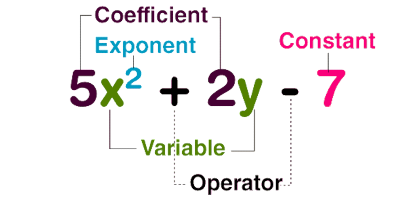

Il calcolo simbolico¶

E” importante lavorare con i simboli, non con i soli numeri.
In questa lezione vogliamo esaminare le operazioni con i polinomi. In particolare analizzeremo:
somma di due polinomi
prodotto di due polinomi
divisione di due polinomi.
Carichiamo le librerie necessarie.
# gli import
import math
import numpy as np
from sympy import *
La libreria sympy è quella che consente di svolgere calcoli simbolici, vale a dire effettuare operazioni che coinvolgano sia numeri che lettere.
La teoria à quella del calcolo letterale che si impara al primo anno di liceo.
Gli ingredienti¶
# le variabili ed i rispettivi simboliche utilizzeremo
a, b, x, n = symbols('a, b, x, n')
# i primi polinomii
P1 = 2*a*x + 3*b
P2 = 3*a*x*x + 3*a*x + 5
Somma di polinomi¶
E” ovviamente possibile sommare simbolicamente due polinomi.
Attenzione
E” possibile sommare solo i monomi simili. In generale la somma di due polinomi si lascia indicata, solo si riducono gli eventuali termini simili.
P1 + P2
Prodotto di polinomi¶
Il notebook ci fa risparmiare molta fatica calcolando per noi il prodotto di due polinomi.
Notiamo che, moltiplicando ad esempio un binomio (due termini) per un trinomio (tre termini) dobbiamo eseguire \(2 \times 3 = 6\) prodotti di monomi.
expand(P1 * P2)
Potenza di un binomio¶
Le potenze di un polinomio non sono un problema.
Al liceo si impara il quadrato di un bionomio.
# il quadrato di un binomio
expand(P1 * P1)
Ora possiamo ottenere subito il quadrato e il cubo di un polinomio.
# il quadrato
expand(P2*P2)
# il cubo
expand(P2*P2*P2)
Apprezziamo il notebook, calcolando con carta e penna il cubo di un trinomio, dovremmo eseguire \(3 \times 3\times 3 = 27\) prodotti di monomi.
Esempio avanzato¶
I simboli possono apparire anche come esponenti.
P3 = a**(n+1)*b**n * a**2*b**n
# riscrive
expand(P3)
# trova il quadrato
expand(P3*P3)
Fattorizzazione di un polinomio¶
La fattorizzazione di un polinomio corrisponde, a livello elementare, per esempio, alle operazioni di raccoglimento dei fattori comuni.
La fattorizzazione di un polinomio può essere il primo passo per la soluzione di un’equazione.
Attenzione
Il raccoglimento dei fattori comuni porta alla fattorizzazione di un polinomio. Questa può essere ottenuta in altri modi, per esempio mediante i prodotti notevoli.
Vediamo un esempio semplice.
# scomposizione
factor(6*x*x - 2*x)
Poi esempi meno banali.
# scomposizione
factor(x*x - 7*x + 6)
factor(6*x*x - 2*x + 8*x*x*x)
Divisione ta polinomi¶
La divisione tra polinomi non è sempre possibile: Supponiamo di voler effettuare la divisione
La divisione è possibile se
il dividendo \(P_1\) è di grado maggiore o uguale del divisore \(P_2\);
esiste un quoziente \(Q\);
può esserci un resto \(R\).
Deve risultare
Se \(R = 0\), allora \(P_1\) è divisibile per \(P_2\).
Se \(P_1\) è divisibile per \(P_2\), allora esiste un polinomio \(Q\) tale che
Questo vuole anche dire che, se fattorizzo \(P_1\), tra i fattori devo trovare \(P_2\).
Primo esempio
# Due polinomi
P4 = x*x - 7*x + 6
P5 = x - 6
Controlliamo il grado in \(x\) dei due polinomi.
grado4 = degree(P4, x)
print(f'Il grado di P4 è {grado4} in x.')
grado5 = degree(P5, x)
print(f'Il grado di P5 è {grado5} in x.')
Il grado di P4 è 2 in x.
Il grado di P5 è 1 in x.
Effettuiamo la divisione, non importa per il momento come, ci pensa la libreria.
# dividiamo
div(P4, P5)
# il risultato è una coppia (quoziente, resto)
(x - 1, 0)
# il risultato può essere riscritto
result = div(P4, P5)
print(f'La divisione di P4 e P5 dà {result[0]} e resto {result[1]}')
La divisione di P4 e P5 dà x - 1 e resto 0
Il polinomio \(P_4\) è quindi divisibile per \(P_5\).
Controlliamo la fattorizzazione di \(P_4\):
factor(P4)
contiene effettivamente \(P_5\).
Riproviamo con
# riproviamo con
P6 = P4 + 1
# la disione risulta
result = div(P6, P5)
print(f'La divisione di P6 e P4 da {result[0]} e resto {result[1]}')
La divisione di P6 e P4 da x - 1 e resto 1
Ci ritroviamo un resto, quindi \(P_6\) non è divisibile per \(P_4\).
Divisori¶
Conosciamo già il massimo comun divisore (GCD) e il minimo comune multiplo (lcm) di due numeri.
Nota
Le sigle GCD (Greatest Common Divisor) e lcm (Least Common Multiplier) sono quelle internazionali.
Ad esempio:
# due numeri interi
p = 6
q = 8
print(f'Il GCD di {p} e {q} è {igcd(p, q)}.')
print(f'Il lcm di {p} e {q} è {ilcm(p, q)}.')
Il GCD di 6 e 8 è 2.
Il lcm di 6 e 8 è 24.
Se riusciamo a scomporre due polinomi in fattori (vedi sopra), è possibile calcolarne massimo comun divisore e il minimo comune multiplo (consultare un manuale di liceo).
gcd(P4, P5, domain=QQ)
lcm(P4, P5, domain=QQ)